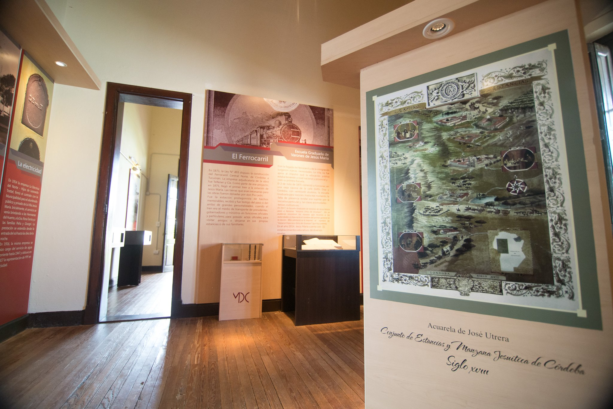
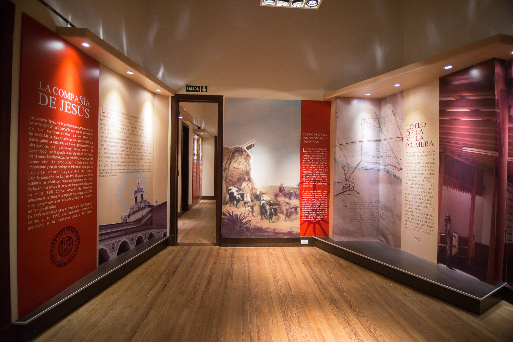
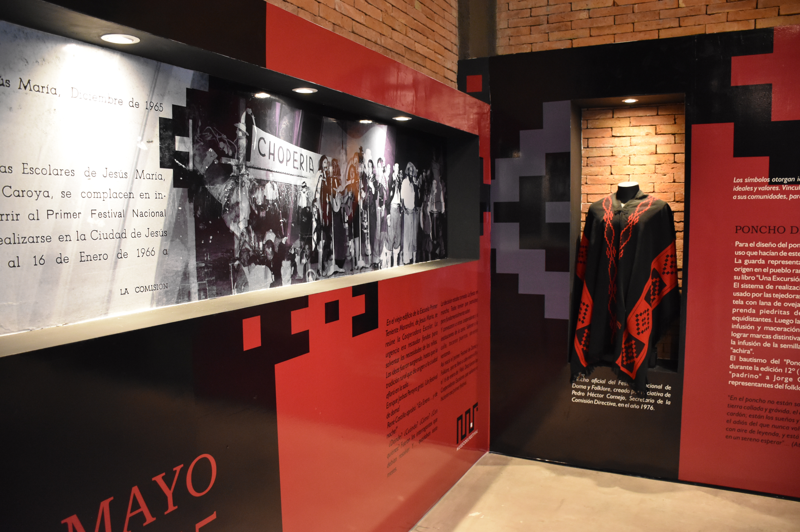
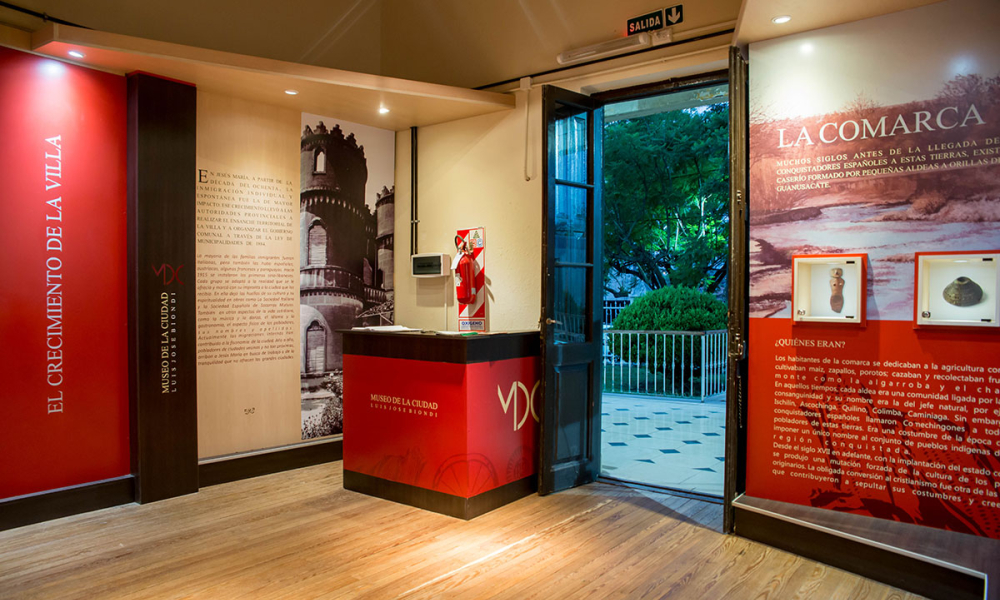

Bienvenidos al Museo de la Ciudad Luis Biondi
Un espacio que conserva la historia y el patrimonio cultural de nuestra ciudad. Descubrí sus exposiciones y participá de sus actividades.
Testimonios de visitantes
“Un lugar lleno de historia y cultura local. La visita fue muy enriquecedora.”

Jesús María
“Excelente museo, me encantó la exposición permanente.”

Córdoba
“Actividades muy completas y personal amable. ¡Recomendado!”

Villa del Totoral

Historia Viva
Una casona de principios del siglo XX, de estilo italianizante, que conserva pisos, techos y aberturas originales. Hoy es sede del museo.
Agenda cultural
Exposiciones permanentes y temporales, charlas, talleres y conciertos que convierten al museo en un espacio activo y comunitario.
Archivo y patrimonio
El museo resguarda el archivo documental local y colecciones que narran la historia de Jesús María desde sus orígenes hasta la actualidad.
Horarios
Los horarios pueden variar en caso de actividades especiales.
Visitas
La entrada es libre y gratuita. Para grupos escolares o visitas guiadas, se recomienda coordinar con anticipación.
Coordinar visita